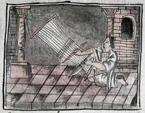
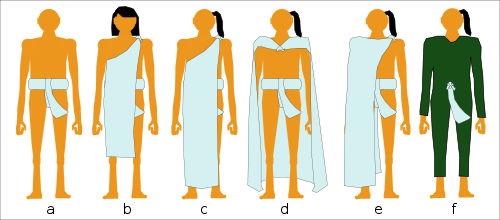
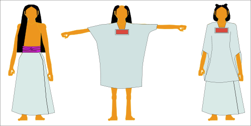
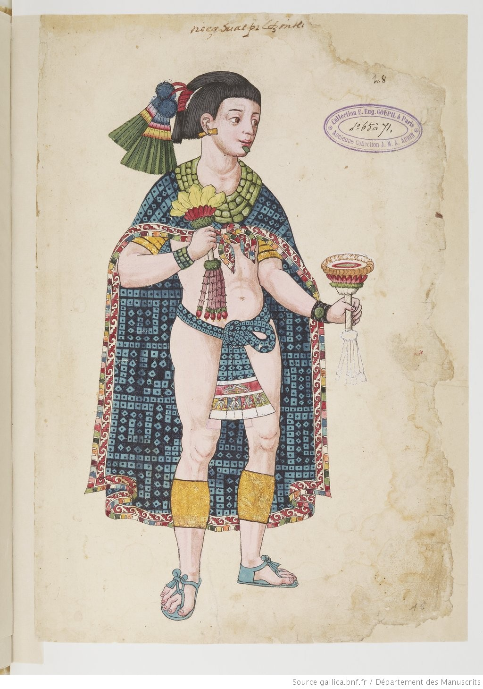
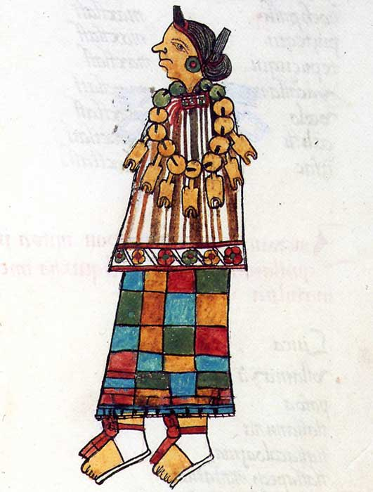
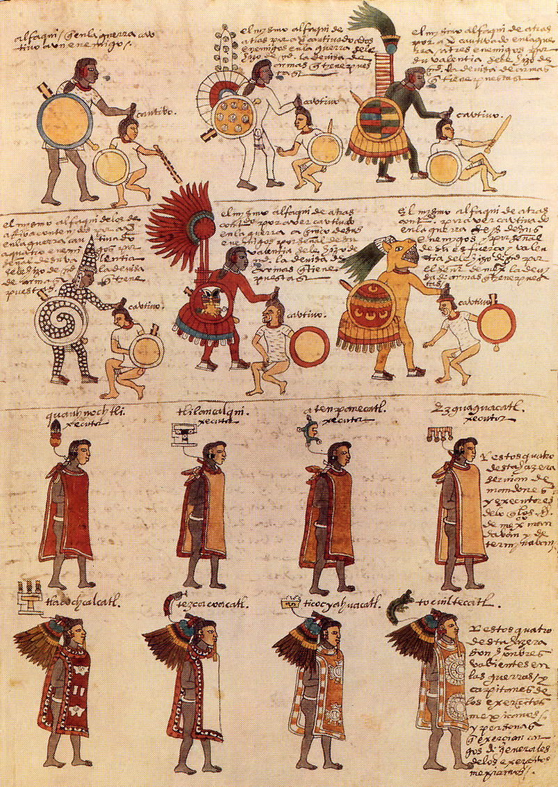

Aztec clothing was a very important cultural aspect of the Aztecs. Whether it for marriage payments, showing of social status,
to even warfare in the form of padded cloth armor. Clothing was usually dyed as bright as they could afford.
Cotton was an extremely important product of the Aztecs. It was used in basically every aspect of their lives.
Ranging from religious offerings, marriage payments and mummification. It was one of the main things the Aztecs traded.
Each household was seen as responsible to make their own clothing and weaving was seen as something to be passed down from mother to daughter as weaving was seen as a womanly thing.

As a result women ran weaving and textile business’s and were allowed to own them completely as well any profit that came with it.
Weaving was so important to the Aztecs that woman who weaved, would be buried with their equipment after they died.
Traditional common male garments would always include a maxtlatl (Loicloth) which would be worn under a tilmahtli (Cloak or Cape).
The style of the cape would usually reflect their social standing, with the noble class and religious leaders wearing much more fancy garments.
Two common hairstyles for men were a side ponytail on a shaved head and neck length hair with a fringe.
Slaves could not wear a cape only a loin cloth.

Traditional common female garments were very simple. Consisting of a blouse called a huīpīlli and a long skirt called a cuēitl.
Hairstyles would quite strict for the Aztecs. A common hairstyle for women was neaxtlāhualli,
which consisted of two braids that projected forwards on their head, almost like a set of horns.
Another thing that women would do is that they would dye a streak of color through their hair,
usually purple because of the plant called xiuhquílitl.

Rich clothing would be much more colorful and would include jewelry, feathers, earrings and other accessories.
Cactli (sandals) were a sign of status and were largely restricted to the noble class. If you were to enter a temple or be in the presence of the emperor you were required to be barefoot.

Clothing for Noble Women were largely the same as the common clothing but with more accessories and color.

Through proving himself in battle a man could rise through the ranks socially regardless of his initial status.
All warriors would were loincloths, and wear basic armor called Ichcahuipilli.
There armor were made of padded cloth, leather and hide.
Warriors would usually be equipped with a shield of some kind.
Elite Warriors would wear Tlahuiztli which would usually resemble an animal of some kind, as well as be elaborately decorated with feathers and jewelry.
